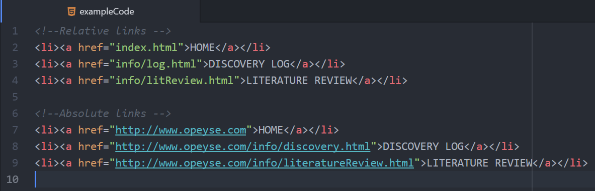
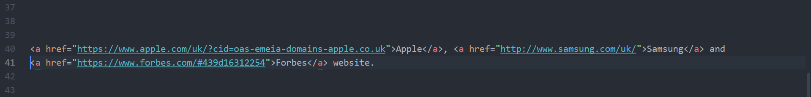

Definitions
An absolute link defines the location of a document and the protocol to get to the document. Absolute link example: “https://opeyse.com/index.html”
A relative link uses the fact that a server knows where the current document located. If we want to link to another document in the same directory we don’t need to write out the full URL. All we have to use is the name of the file. An example of a relative link from the previous example. We do not need to write out the entire URL. An example of a relative link: “index.html"
The diagram below shows three different examples of relative and absolute links. The clear difference between the links is that all absolute links include the domain name.
Absolute links are used to connect to a separate website. For my website, I used several absolute links to connect to different websites. The diagram below shows me using an absolute link to connect to different websites.
